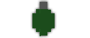

Ace of Spades is a free first-person voxel shooter featuring a fully destructible terrain.
Videos | Screenshots
Clients
| OpenSpades | OpenSpades is an open source OpenGL-based client created by yvt with improved graphics (and higher system requirements). Download |
|---|---|
| BetterSpades | BetterSpades is an open source client created by ByteBit that is more close to the original and also runs on older systems. Download |
| Ace of Spades | The last official beta version 0.75 of the original Ace of Spades by Ben Aksoy. No longer being maintained. Download |
Getting Started
After joining a server, you will be asked to select a team and a weapon. You can always change your selection during the game by pressing the L key (or dot and comma, depending on client). Press the T key to write into the chat. Use Y for teamchat. To use commands, write them into the chat. Type /help to see a list of available commands and info about the server. For a map overview press N (or M, depending on client).
Game Items
 |
The rifle is an all-round weapon, with a long effective range, making it especially suitable for sniping. |
|---|---|
| The SMG (Submachine Gun) is a weapon for close to mid-range assault, with a high fire rate and strong recoil. | |
| The shotgun is most suitable for close range attacks and shoots several bullets simultaneously. | |
|  | Use grenades to inflict enemy and block damage. Keep distance as it also applies damage to yourself. |
 |
Build a single block with left mouse key. Hold right mouse key to line build. Use arrow keys to choose color. Press E to pick color from blocks. |
| The spade removes blocks and does melee damage. Left mouse key for single block removal, right mouse key for tunneling 3 blocks per hit. | |
 |
Go to your base to restock health and ammo and to capture the enemy intel. In territory game modes, hold position to capture. |
 |
Pick up the enemy intel by walking over it, then bring it to your base. |
Game Modes
| Arena | No respawns, the last player remaining wins the round for his team. |
|---|---|
| Babel | Build a tower to reach the sky platform and capture the intel before the enemy team does. |
| CTF | Capture the Flag: Find the enemy intel and bring it to your base. |
| Push | Build bridges over the water to reach your base and capture the intel before the enemy team does. |
| TC | Territorial Control: Capture every base on the map. |
| TDM | Team Deathmatch: The team that first achieves a certain number of kills, wins. |
| TOW | Tug of War: Advance towards the enemy by capturing the next base ahead. |
History
The game Ace of Spades was developed by Ben Aksoy in 2011 as a beta version. Jagex Games Studio took over development of the game in 2012, making it payware on Steam and changing its gameplay. The site buildandshoot.com was then launched by fans to create a place where the last official beta version (0.75) can still be played. During 2013, japanese developer yvt released the first version of OpenSpades, an alternative client for the last beta version with improved graphics. In late 2016, a group of developers started Piqueserver to continue development of the server software. In 2017, the developer ByteBit released the first version of his alternative client BetterSpades, aiming to replicate the beta version more closely. The steam version of the game was shut down in 2019.